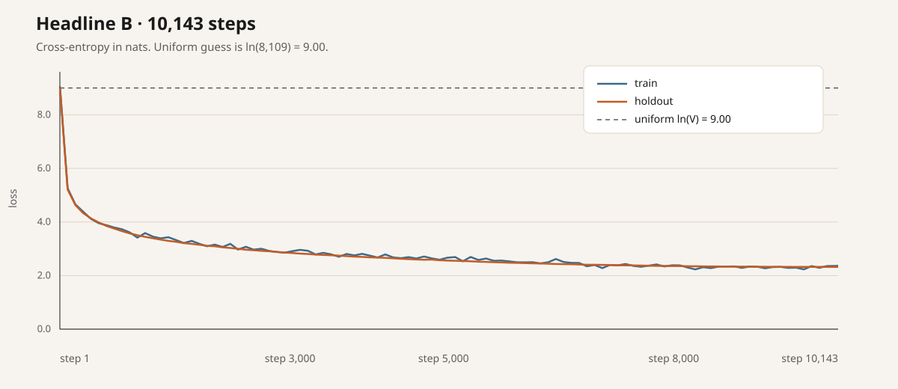

2026-09-21 · post #9
A chess model that never saw the rules
We trained a 29.5 million parameter GPT on chess moves and never showed it a rule. It guesses the next move 38.6% of the time, draws random opponents by repeating positions, and almost never beats Stockfish at skill 1.
The training file is a month of Lichess games, both ratings at least 1800, twenty plies or more. One SAN token per move: Nf3, O-O, e8=Q. A nanoGPT-style decoder, eight layers, 512 wide, eight heads, context 256, weight-tied, flash attention. python-chess checks legality only when the model plays. Stockfish 17.1 is a pinned Linux binary, because a Compute image has no apt.
Headline run run_dc7002880b6daab7cb3cb6f61e3e063c on a RunPod H100-PCIe: 16,326,581 positions from 220,769 games, 29,502,976 parameters, 10,143 steps in 837 seconds. Next-move top-1 on the holdout is 38.55%. Against a random mover it scored 50 wins, 50 draws, 0 losses. Against Stockfish skill 1 it scored 2 wins, 10 draws, 88 losses. The ticket said done at a 99% legal-move rate and 95 wins of 100 versus random. This run is 94.26% legal by argmax and 50 wins. The whole issue, including two Vast boots that never ran, cost $2.14.
- Next-move top-1
- 38.55%
- Legal, argmax
- 94.26%
- vs random, W / D / L
- 50 / 50 / 0
- vs Stockfish skill 1, W / D / L
- 2 / 10 / 88
- top-1
- next-move accuracy on held-out games (2% split by game), teacher-forced.
- legal rate, sampled
- on 5,000 held-out positions, one move sampled from the unmasked softmax at temperature 1.0, parsed with python-chess. Ambiguous or unparseable SAN counts as illegal.
- legal rate, argmax
- same positions, the single most likely move.
- matches
- 100 games per opponent, colours alternate. The model plays its unmasked argmax; if that is illegal it is counted (
illegal_attempts_in_matches) and the model plays its highest-probability legal move instead. Games end on python-chessis_game_over(claim_draw=True)or at 300 plies (counted as a draw). Stockfish: skill level 1,Limit(time=0.02)per move.
Three runs on the same script
A 4-layer sample on 100k positions barely predicts the next move. Four million positions get you a model that mostly plays legal chess and still cannot convert a random game. Sixteen million positions, same GPU minutes, moves every number in the right direction and still misses the ticket.
| Sample | Headline A | Headline B | |
|---|---|---|---|
| Params | 3,787,264 | 28,386,304 | 29,502,976 |
| Positions | 102,098 | 4,081,734 | 16,326,581 |
| Steps | 126 | 13,440 | 10,143 |
| top-1 | 2.59% | 34.18% | 38.55% |
| legal sampled | 8.89% | 79.02% | 84.84% |
| legal argmax | 9.70% | 90.30% | 94.26% |
| vs random W/D/L | 0 / 18 / 2 | 40 / 59 / 1 | 50 / 50 / 0 |
| vs Stockfish W/D/L | 0 / 1 / 19 | 0 / 9 / 91 | 2 / 10 / 88 |
| Illegal attempts | 2,273 | 2,182 | 1,290 |
| Cost | $0.07 | $1.08 | $0.94 |
4M → 16M positions at roughly the same GPU minutes moved top-1 34.2 → 38.6, legal argmax 90.3 → 94.3, legal sampled 79.0 → 84.8, wins vs random 40 → 50, wins vs Stockfish 0 → 2, illegal attempts 2,182 → 1,290. The train/holdout gap closed: A sat at about 2.23 train vs 2.70 holdout late in training; B finished 2.36 vs 2.32.
Watch the recorded games
The model is white in both. Use prev/next, play, or the arrow keys once the board is focused. The side panel is the saved softmax from that ply, not a live re-run.
Fetching the recorded plies.
What the draws are
We replayed every drawn PGN with python-chess, read board.outcome(claim_draw=True), and counted material from the model’s side.
Headline B vs random: 50 draws = 39 threefold repetition, 10 stalemate, 1 ply cap. At the end of those games the model was ahead by three pawns or more in 23, behind by that much in 24, and within two points in 3. Median drawn game 103 plies. The model often has the extra material. Playing a deterministic argmax, it shuffles into a repetition instead of converting. It has imitated human games, and humans never play “mate a random mover.”
vs Stockfish: 10 draws, all threefold repetition.
Headline A was the same shape. vs random: 59 draws = 47 threefold repetition, 11 stalemate, 1 ply cap. Ahead in 30, behind in 28, level in 1. Median 114 plies. vs Stockfish: 9 draws, all threefold repetition.
What the model got wrong
Step to ply 37 in the random replay. The argmax is exf7+ at probability 0.074. That move is illegal. The model plays Qe2. Ply 43 wants Rxa8+ and plays h3. Ply 47 wants Bxb8 and plays Qe4. In the Stockfish game, ply 71 wants Kg2 at 0.53 and plays Rf1.
The 4M run made the same class of error easier to see. In its recorded random game the model wants Nxb5 at plies 15 (p=0.26), 19 (0.18), 21 (0.49), and 23 (0.25). There is no knight that can reach b5. It plays Be2, then Bf3, then a3, then b4. In that run’s Stockfish game, ply 33 assigns 0.99 to Bxc4. Illegal. It plays Bd4 at 0.001. The model tracks the board imperfectly. That is the visible mechanism behind the legal-move numbers.
Holdout loss, 10,143 steps
Holdout cross-entropy started at 9.00, essentially a uniform guess over the 8,109-move vocab (ln(8109) = 9.00), and ended at 2.32. Train finished at 2.37. The 4M run went 8.71 → 2.70 on a 5,928-move vocab and overfit: late train readings sat near 2.23 against that 2.70 holdout.

Data and model
Stream Lichess/standard-chess-games for year=2025 month=09 on the machine. Keep a game if both Elos are at least 1800 and it has at least 20 plies; drop Abandoned and Rules infraction. Headline B scanned 630,983 rows in 110 seconds, filtered in 101 seconds, and kept 220,769 games. Headline A scanned 154,097 rows in 39.6 seconds, filtered in 31.7 seconds, and kept 54,828 games. Fallback, unused here: adamkarvonen/chess_games lichess_100mb.zip.
The tokenizer works on whole moves, not characters. A game's movetext — 1. e4 { [%clk 0:05:59] } 1... c5 2. Nf3 d6 — has its clocks, comments, and move numbers stripped, leaving a flat sequence of SAN strings: e4 c5 Nf3 d6. Each distinct string becomes one vocabulary entry: O-O, e8=Q, and Qxf7# are each a single token, with no notion that they involve a king, a pawn, or a queen. B built 8,109 tokens this way; A built 5,928.
The decoder is eight layers, d_model 512, eight heads, block 256, weight-tied embeddings, flash attention. Param count moves with vocab size: 28,386,304 on A, 29,502,976 on B. B trained three epochs, batch 64, learning rate 4e-4. Eval and matches took 199 seconds, including 100 games each against random and Stockfish. Treating a move as an opaque string is also why the model can be confident in an illegal move (see above): it learned which strings tend to follow which, not the geometry that makes a move legal in a given position.
Weights: theoriclabs/chess-move-transformer holds this 16M run (model.pt, vocab.json, results.json), pushed 08:58 UTC after run A’s upload. train_and_push injects the stored hf secret; storing the secret does not put it on the machine.
What the issue cost
| Run | What | GPU | Billed | Cost |
|---|---|---|---|---|
run_ef3aa0058ce5f3699e73a9d57fb259af | First pipeline attempt, --gpu cheap. Hung in “provider reports creating”, cancelled. | Vast RTX-3090 | 17 min | $0.05 |
run_496b871f1d3790e0eef6c77447fae548 | Second attempt. boot_failed: no Vast interruptible L4 offers. | Vast L4 | — | $0.00 |
run_0ffa481485213ea2e182a409b3b6fc86 | Sample preset, 4 layers / 256-wide, 100k positions, 126 steps, 20+20 games. | RunPod A100-PCIe-80GB | 3 min | $0.07 |
run_b9d92718d37fbe9b36c31ad2e21815d8 | Headline A: 4.08M positions, 8 epochs, 13,440 steps, 100+100 games. | RunPod H100-PCIe | 25 min | $1.08 |
run_dc7002880b6daab7cb3cb6f61e3e063c | Headline B: 16.3M positions, 3 epochs, 10,143 steps, 100+100 games. | RunPod H100-PCIe | 22 min | $0.94 |
Friction filed during the issue: rpt_d5dd2c8585511c999fd81010a5d14301 (CLI has no non-interactive price quote; --dry-run prints an upload plan, not a quote), rpt_023af546ab619039ec080dba1279136f (--gpu cheap silently used the SKU in the source after workload_estimate_unsupported), rpt_b9e65fd29961222fe7239f378aa010b4 (hung Vast RTX-3090 boot billed 17 minutes; one report per run blocks filing distinct issues), rpt_022179b60e28c3aacba224f311769068 (catalog listed a Vast L4 that had no offers), rpt_259d10a7adcf0d20e2dd795c43a3d72e (compute logs -f crashes after about 15 minutes with ValueError: invalid literal for int() with base 16: b''). Stockfish via apt is impossible: there is no apt API on compute.Image. The pinned GitHub binary works. The compute report summary is capped at 200 characters.
Train it on Compute
One file. Hand compute.cx/SKILL.md to your agent, plus the specials in this post’s overlay.
curl -fsSL https://raw.githubusercontent.com/theoriclabs/letsusecompute/main/posts/chess-transformer/train.py -o train.py
curl -fsSL https://compute.cx/install.sh | sh
compute setup
compute credits add 10
compute run train.py::train --gpu cheap --dry-run
compute run train.py::train --gpu cheap --timeout 1800 --wait --args '{"sample": true}'
compute run train.py::train --gpu H100-PCIe --provider runpod --timeout 4500 --wait --args '{"max_positions": 16000000, "epochs": 3, "batch_size": 64, "lr": 0.0004}'Dry-run only prints the upload plan. The real command quotes a GPU before spend. The sample preset is four layers, 256-wide, 100k positions, 20 games per opponent. Omit the --args object on the H100 line and you get headline A (4M positions, 8 epochs). Timeout 4500 covers download, three epochs, eval, and 200 matches. The script downloads Stockfish 17.1 itself.
To publish weights, store a write token and use the secrets-backed entrypoint. Storing the secret does not put it on the machine; Secret.from_name("hf") on train_and_push does.
compute secrets set hf
compute run train.py::train_and_push --gpu H100-PCIe --provider runpod --timeout 4500 --wait --args '{"max_positions": 16000000, "epochs": 3, "batch_size": 64, "lr": 0.0004}'Want to read the script? train.py.
Data, engines, and the trainer
Games from Lichess / Hugging Face. Legality and match rules from python-chess. Opponent ladder: a uniform random legal mover, and Stockfish 17.1 at skill 1. The decoder follows nanoGPT. Training ran on compute.cx. Ticket: theoriclabs/letsusecompute#9.